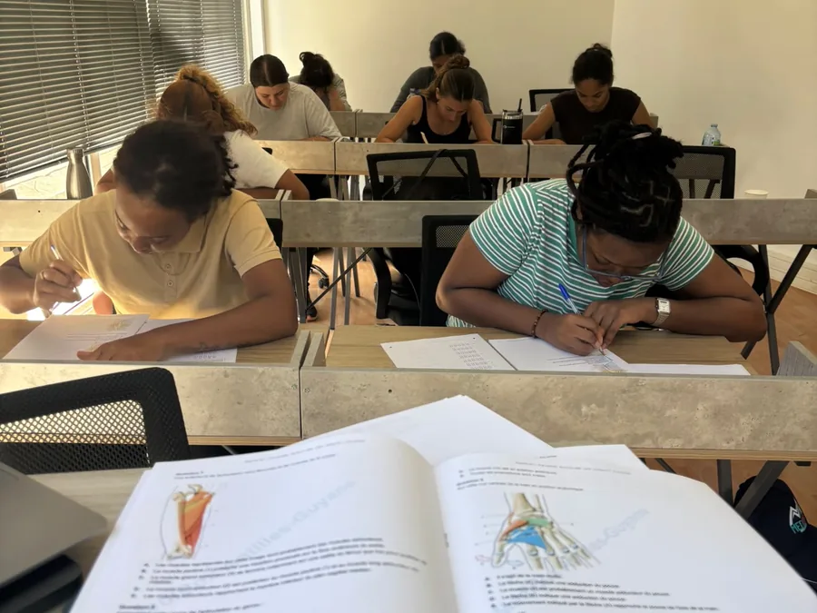

La première promotion de la licence portail santé
Les bacheliers de juin 2027 inaugureront la nouvelle voie d'accès aux études de santé. Nous ouvrons les inscriptions dès maintenant, pour les familles qui veulent s'organiser tôt et réserver une place dans une promotion qui sera limitée.
Places limitées par territoire · comprendre la réforme
En fonction de votre département
Le présentiel et le distanciel n'ont ni les mêmes coûts ni les mêmes contraintes, et l'organisation n'est pas identique d'un territoire à l'autre. Chaque territoire a donc sa page, avec ses tarifs et son accompagnement détaillé.
Guadeloupe
En présentiel, dans nos locaux ouverts de 6h30 à 23h, sept jours sur sept, à côté de la Faculté de Médecine. Le suivi annuel à 3 850 €, le stage de pré-rentrée à 500 €.
Martinique
À distance, la formule avec laquelle nous avons obtenu tous nos résultats depuis notre ouverture, et qui a fait notre succès ! Le suivi annuel à 2 900 €, le stage de pré-rentrée à 500 €.
Guyane
À distance, comme les douze étudiants qui ont pris 28 % des places de médecine du territoire. Le suivi annuel à 2 900 €, le stage de pré-rentrée à 500 €.
Il n'existe qu'une seule formule Portail Santé : le programme, les cours, les examens et le classement sont les mêmes partout, et le territoire ne décide pas de ce que votre enfant apprend. Nouveauté 2027-2028 : des professeurs de sciences présents tous les jours à la prépa, pour animer les révisions encadrées et ouvrir du soutien dès qu'une difficulté apparaît.
Pourquoi le stage commence le 23 août, et non le 16
Parce que cette année ne ressemble à aucune autre. La Faculté de Médecine ne met jamais ses cours en ligne avant le 15 septembre. Et pour cette première promotion Licence Portail Santé, le programme définitif ne sera pas connu avant cette date non plus. Commencer à la mi-août n'apporterait donc aucun avantage : nous ne pouvons pas enchaîner le stage et les cours comme nous le faisions les années précédentes.
Autant en profiter pour se reposer un peu plus avant une année qui va être dense. Le stage, lui, ne change pas : il porte sur le socle scientifique et la méthode de travail, que la réforme ne touche pas. Nous nous adaptons à elle avec stratégie, et à ce qu'elle va imposer à tout le monde.
Le socle de la prépa
Quelle que soit la forme finale de la réforme, ce qui fait notre travail reste le même.
- Des cours rédigés par notre équipe, avec la même rigueur qui a fait le succès de nos cours les années précédentes
- La plus grande base de QCM des Antilles-Guyane, écrite par nos tuteurs
- Des examens blancs réguliers, dans les conditions réelles
- Des tuteurs disponibles tous les jours, qui ont passé le concours ici
- À distance ou en présentiel, sans que la formule change le programme, les cours, les examens ni le classement

Ce que les familles nous demandent
S'inscrire maintenant, est-ce que ça m'engage ?
Et si je ne suis pas pris sur Parcoursup ?
Peut-on payer en plusieurs fois ?
Le programme officiel de la licence portail santé est-il publié ?
Le tarif est-il le même dans les trois territoires ?
S'inscrire pour 2027-2028
190 € de frais de réservation, remboursés en cas de refus sur Parcoursup aux Antilles-Guyane, pour bloquer une place dans la première promotion.